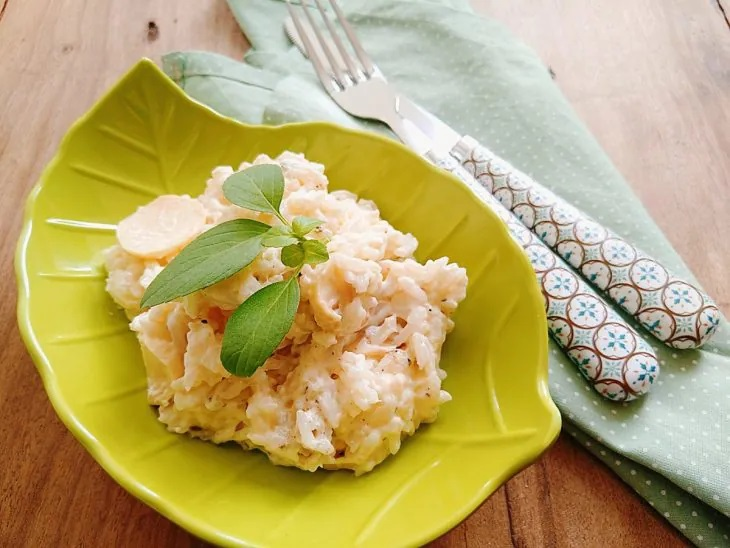
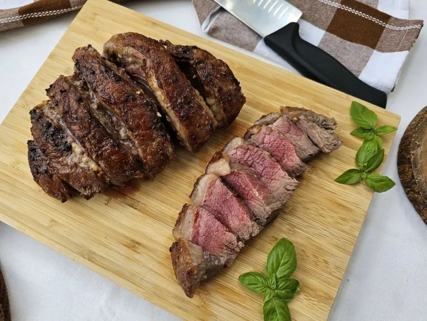
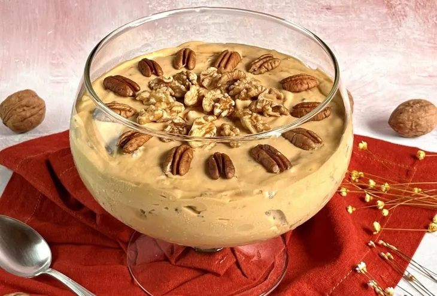

Arroz a Piamontese
- 1 colher de sopa de manteiga ou margarina
- 2 dentes de alho
- 80 gramas de champignon
- 1 xícara de chá de arroz cozido
- 50 gramas de mussarela ralada
- ¼ de xícara de chá de creme de leite
- Sal, pimenta e salsinha a gosto
Reúna todos os ingredientes em uma panela, derreta a manteiga e refogue o alho; Adicione o champignon; Acrescente a mussarela;

Picanha na manteiga
- 1 peça de picanha
- Sal e pimenta-do-reino a gosto
- 1 tablete de manteiga em temperatura ambiente
- 5 dentes de alho picados ou amassados
Reúna todos os ingredientes, em uma tábua, faça cortes sobre a picanha; Em um recipiente, misture a manteiga com o alho; Passe a manteiga sobre a gordura da picanha e entre os cortes;

Strogonoff de nozes
- 250 gramas de nozes picadas
- 800 gramas de doce de leite
- 450 gramas de nata (bem gelada)
- 4 gemas peneiradas
- 2 claras
- 1 colher de sopa de açúcar
Em uma panela fora do fogo, coloque o doce de leite e as gemas. Misture bem; Leve ao fogo médio e mexa sem parar até chegar no ponto de brigadeiro;